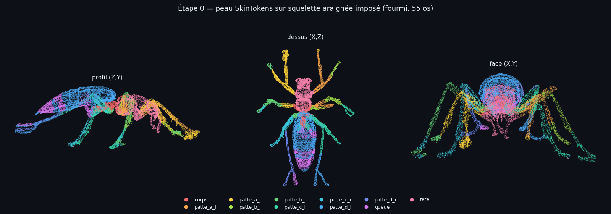

On a imposé le squelette de l'araignée CC0 (56 os, noms sémantiques, parfaitement symétrique) au maillage de la fourmi, et demandé à SkinTokens de ne prédire que la peau. Chaque point est coloré par la chaîne d'os qui le contrôle.

| Mesure | Résultat |
|---|---|
| squelette conservé | 55 os sur 56 — seul root
(os-repère sans peau) est élagué, par conception ; récupéré à l'étape 1 |
| fidélité des positions | écart médian 0,003, pire 0,006 (normalisé) — le squelette de sortie est le gabarit |
| les 8 chaînes de pattes servies | oui — de 3,0 % à 21,9 % des sommets chacune |
| poids normalisés | somme médiane 1,000 |
Limites vues, assumées :
les antennes sont peau-liées à des chaînes de pattes
(le gabarit araignée n'a pas d'antennes — elles bougeront comme des pattes),
et l'abdomen déborde un peu sur la chaîne patte_d_l (21,9 % contre
3,0 % à droite). Les deux relèvent du recalage, prévu à l'étape 2 —
pas de la prédiction de peau, qui fait exactement son travail.
Conséquence : la voie « squelette-gabarit » est validée. Le rig peut porter les noms et la structure d'un squelette connu — donc symétrie parfaite, chaînes égales, et animations du gabarit jouables directement.